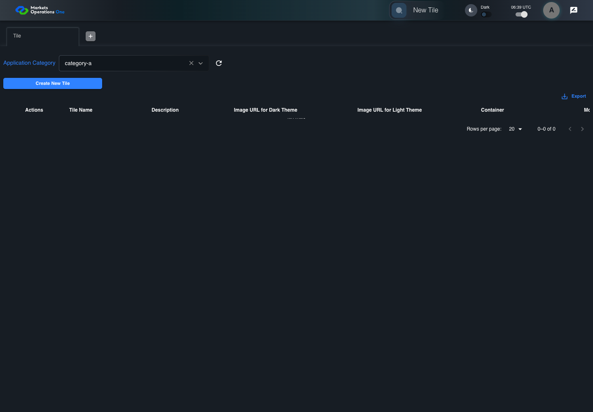
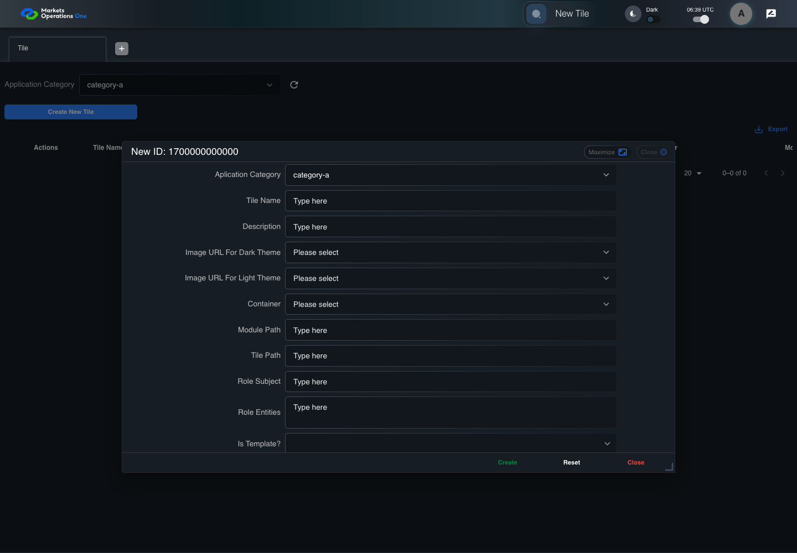
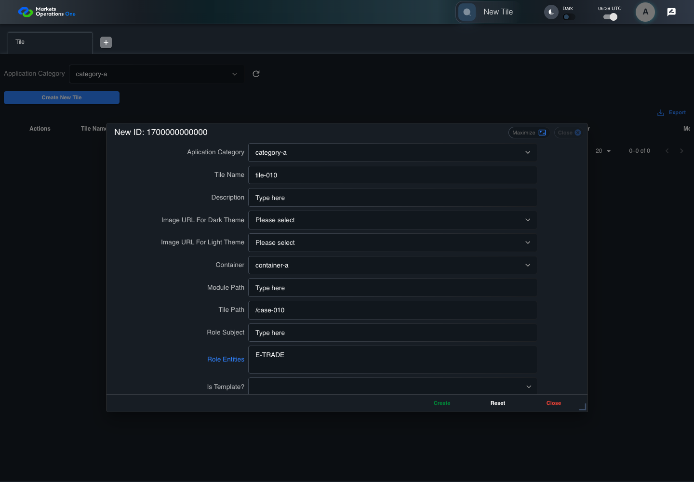

BFF-ADM-010 current BFF administration through actual UI
PASS · application/run-072/bff-adm-010-current-bff-administration-through-actual-ui-21eacfa30d2a-attempt-1 · ACTUAL_APPLICATION_LOCAL_SERVICES
Actual current React and exact-current BFF admin controllers/services/JPA with actual migration DDL in disposable PostgreSQL. Controlled OUD/EMS2 identities and local Spring bootstrap. Fixture SQL seeds/mutates isolated records; service errors are actual database errors. Undefined agreed messages remain unresolved acceptance.
2026-10-22T06:39:08.467Z to 2026-10-22T06:39:14.806Z
Assertions and result · Artifact manifest · Exact run inputs and source hashes
Result SHA-256:b6a5bdc4421bd62196277ee010dfc1fc839eaa0049814a6eafb4f0c5c727900bMachine observations
- actual-identity-projection.json
a6912bfa072fbea6d61726014a02fd9520ddeeeb83c33f023902d3a36a6b66dc - baseline-inputs.json
218e77632545df682bc4ead76e80e85f3827a5c22ab94422225eaaff30d7ab48 - bff-boundary.json
258c0a80b85331c1cbea59e3775764598ef4c46cd2688cdd78b2286f48290981 - committed-ui-submission-comparisons.json
8c8b77b8a2ddd4edbb530c5b65b7b62e7b2f7c758913c0babce7fe8f337855ae - creation-clock.json
1a4ac542371c66a6ffc6a815833d9c8f57297ba4836587a1bf4a55bc1fa46dc8 - empty-filter-rule-representation.json
f6c1dd7b99309aa39e4eee2613ca5dd70d09138f7c6548292c14321f22470b18 - fixture-step-10.json
eb76da5796e9a9d78cc891bfdca951c5a32741734871669f49644103a5bb7131 - fixture-step-11.json
02485342b89a8ad3b6f7c9b413a603dcf1970a899161594212a7912a1c462d6e - fixture-step-6.json
e611a05996b6230d63b1ce069bff848ae97cc9e7f5ab21b58ce25e443836b415 - fixture-step-7.json
189883554f9ad4a4963c3abec751dab8226e58e9ee97693315858af6bff94bf8 - fixture-step-8.json
f1f612ed2782305547a41ed323b7b81e551c9f4aaa443d3dc6270632f4fe9d43 - fixture-step-9.json
913f7ae037afb093a9702cc8be85641576609c4c84cbac7797534250734a28b8 - initial-persisted-records.json
b856e406b58995dd324888800eabeb45bf9a208710abea33523ed2122ed473f9 - persisted-after-submit.json
0b392a6efac6085c6672fec5b4d7953b580c98f86b0c45eb3520db1432e2cbc6 - reference-snapshot-3.json
d913bd42bd9a7922c703c26388c811a42e09bcae618b4a70fceee0ecc979b3fa - reference-snapshot-4.json
1fb809a9e27c5d01cb8a71c033d469591631fe27ff16f3fa238a35c9cf61dcb4 - ui-origin-bff-requests.json
98b4458fd23b668a1fa368beb7cc6e724611ca435261f793745e2d3bd14265a6
Screenshot capture: CAPTURED. Named frames: 25.
Step screenshot evidence: COMPLETE. 24/24 canonical steps have execution screenshots.
Canonical step timeline
Given Admin A uses subject "admin-a" with role "FMO_ADMIN" in an isolated authenticated browser
Execution: PASSED.
1. step-01 Visible state after step 1: Given Admin A uses subject "admin-a" with role "FMO_ADMIN" in an isolated authenticated browser
2026-10-22T06:39:10.235Z · 1440×1000
Step: /Users/lushevol/code/github/ratan-release-impact/workbench/tasks/ui-test-coverage-20261022/test-cases.md:15016
SHA-256:eec5872632406774f1e3e79de8a07c7249836241108ba771cff133ac015434d3And the controlled Tile fixture records the initial grid rows and persisted values
Execution: PASSED.
2. step-02 Visible state after step 2: And the controlled Tile fixture records the initial grid rows and persisted values
2026-10-22T06:39:10.352Z · 1440×1000
Step: /Users/lushevol/code/github/ratan-release-impact/workbench/tasks/ui-test-coverage-20261022/test-cases.md:15017
SHA-256:8981f23155a955bd889f87b5d7fcafbd6ca0da538567d51a37c43a995c599cf8And Category 101 has label "category-a" and Import Map 201 has Module Name "container-a"
Execution: PASSED.
3. step-03 Visible state after step 3: And Category 101 has label "category-a" and Import Map 201 has Module Name "container-a"
2026-10-22T06:39:10.384Z · 1440×1000
Step: /Users/lushevol/code/github/ratan-release-impact/workbench/tasks/ui-test-coverage-20261022/test-cases.md:15018
SHA-256:6e45dc27b67ab3efb3d9280ff61fee72e58757001c21c3fadc1594e9b3f38f7aAnd both references belong to "FMO_ADMIN" and the Tile page category filter value is Category 101
Execution: PASSED.
4. step-04 Visible state after step 4: And both references belong to "FMO_ADMIN" and the Tile page category filter value is Category 101
2026-10-22T06:39:10.417Z · 1440×1000
Step: /Users/lushevol/code/github/ratan-release-impact/workbench/tasks/ui-test-coverage-20261022/test-cases.md:15019
SHA-256:6e45dc27b67ab3efb3d9280ff61fee72e58757001c21c3fadc1594e9b3f38f7aAnd the controlled creation clock returns 1700000000000 milliseconds
Execution: PASSED.
5. step-05 Visible state after step 5: And the controlled creation clock returns 1700000000000 milliseconds
2026-10-22T06:39:10.451Z · 1440×1000
Step: /Users/lushevol/code/github/ratan-release-impact/workbench/tasks/ui-test-coverage-20261022/test-cases.md:15020
SHA-256:165b3043054d4699293501830517c4b5a2d3fe02386c7a9246d7df39b9307ae6And the baseline fixture data defines "Tile Name" as "tile-010"
Execution: PASSED.
6. step-06 Visible state after step 6: And the baseline fixture data defines "Tile Name" as "tile-010"
2026-10-22T06:39:10.483Z · 1440×1000
Step: /Users/lushevol/code/github/ratan-release-impact/workbench/tasks/ui-test-coverage-20261022/test-cases.md:15021
SHA-256:165b3043054d4699293501830517c4b5a2d3fe02386c7a9246d7df39b9307ae6And the baseline fixture data defines "Module Path" as "/fixture"
Execution: PASSED.
7. step-07 Visible state after step 7: And the baseline fixture data defines "Module Path" as "/fixture"
2026-10-22T06:39:10.517Z · 1440×1000
Step: /Users/lushevol/code/github/ratan-release-impact/workbench/tasks/ui-test-coverage-20261022/test-cases.md:15022
SHA-256:883034f63985c6ca077afe7182752ff7401decbb7891dae8e3e80f61e8062601And the baseline fixture data defines "Tile Path" as "/case-010"
Execution: PASSED.
8. step-08 Visible state after step 8: And the baseline fixture data defines "Tile Path" as "/case-010"
2026-10-22T06:39:10.551Z · 1440×1000
Step: /Users/lushevol/code/github/ratan-release-impact/workbench/tasks/ui-test-coverage-20261022/test-cases.md:15023
SHA-256:883034f63985c6ca077afe7182752ff7401decbb7891dae8e3e80f61e8062601And the baseline fixture data defines "Role Entities" as "E-TRADE"
Execution: PASSED.
9. step-09 Visible state after step 9: And the baseline fixture data defines "Role Entities" as "E-TRADE"
2026-10-22T06:39:10.584Z · 1440×1000
Step: /Users/lushevol/code/github/ratan-release-impact/workbench/tasks/ui-test-coverage-20261022/test-cases.md:15024
SHA-256:18cc7acb1e891ce228da1bf0e5c353c2ef60485b135ee88a1c1d9c603e614846And the baseline fixture data defines "Filter Rule" as ""
Execution: PASSED.
10. step-10 Visible state after step 10: And the baseline fixture data defines "Filter Rule" as ""
2026-10-22T06:39:10.617Z · 1440×1000
Step: /Users/lushevol/code/github/ratan-release-impact/workbench/tasks/ui-test-coverage-20261022/test-cases.md:15025
SHA-256:18cc7acb1e891ce228da1bf0e5c353c2ef60485b135ee88a1c1d9c603e614846And the baseline Tile references use "Aplication Category" "category-a" and "Container" "container-a"
Execution: PASSED.
11. step-11 Visible state after step 11: And the baseline Tile references use "Aplication Category" "category-a" and "Container" "container-a"
2026-10-22T06:39:10.651Z · 1440×1000
Step: /Users/lushevol/code/github/ratan-release-impact/workbench/tasks/ui-test-coverage-20261022/test-cases.md:15026
SHA-256:27a1caed333d287c3697e871f3ecab67d2c0f34e15862dfe74dbf1b64c17033bWhen Admin A clicks the button labeled "Create New Tile" on the Tile administration page
Execution: PASSED.12. step-12 Visible state after step 12: When Admin A clicks the button labeled "Create New Tile" on the Tile administration page
2026-10-22T06:39:10.872Z · 1440×1000
Step: /Users/lushevol/code/github/ratan-release-impact/workbench/tasks/ui-test-coverage-20261022/test-cases.md:15027
SHA-256:2724382f56f8cb1b7b4b90b6af24035eaa79019501bbfee3f4eb4add4aa32221Then the dialog titled "new ID: 1700000000000" is visible on the Tile administration page
Execution: PASSED.
13. step-13 Visible state after step 13: Then the dialog titled "new ID: 1700000000000" is visible on the Tile administration page
2026-10-22T06:39:10.941Z · 1440×1000
Step: /Users/lushevol/code/github/ratan-release-impact/workbench/tasks/ui-test-coverage-20261022/test-cases.md:15028
SHA-256:5a391ef3eb455f7f67da0829a65383aae53d6311ae42ee0d164ffd04d8824f32When Admin A clicks the combobox labeled "Container" in dialog "new ID: 1700000000000"
Execution: PASSED.
14. step-14 Visible state after step 14: When Admin A clicks the combobox labeled "Container" in dialog "new ID: 1700000000000"
2026-10-22T06:39:11.052Z · 1440×1000
Step: /Users/lushevol/code/github/ratan-release-impact/workbench/tasks/ui-test-coverage-20261022/test-cases.md:15029
SHA-256:e5d8854d63735b2f22141ebb0c8e124df165b09d42896d7c829b2a5089145465And Admin A clicks the option labeled "container-a" in the expanded "Container" listbox for dialog "new ID: 1700000000000"
Execution: PASSED.
15. step-15 Visible state after step 15: And Admin A clicks the option labeled "container-a" in the expanded "Container" listbox for dialog "new ID: 1700000000000"
2026-10-22T06:39:11.573Z · 1440×1000
Step: /Users/lushevol/code/github/ratan-release-impact/workbench/tasks/ui-test-coverage-20261022/test-cases.md:15030
SHA-256:e61940af594f16e72db8a461f3d4c999859344a468a536f7035b8a7fc11b42e1And Admin A fills the textbox labeled "Tile Name" with "tile-010" in dialog "new ID: 1700000000000"
Execution: PASSED.16. step-16 Visible state after step 16: And Admin A fills the textbox labeled "Tile Name" with "tile-010" in dialog "new ID: 1700000000000"
2026-10-22T06:39:11.993Z · 1440×1000
Step: /Users/lushevol/code/github/ratan-release-impact/workbench/tasks/ui-test-coverage-20261022/test-cases.md:15031
SHA-256:ac27b3cd65b78bac19666ef500847c22500aab67efd80ea64aa94f84a50fdd10And Admin A fills the textbox labeled "Module Path" with "" in dialog "new ID: 1700000000000"
Execution: PASSED.17. step-17 Visible state after step 17: And Admin A fills the textbox labeled "Module Path" with "" in dialog "new ID: 1700000000000"
2026-10-22T06:39:12.414Z · 1440×1000
Step: /Users/lushevol/code/github/ratan-release-impact/workbench/tasks/ui-test-coverage-20261022/test-cases.md:15032
SHA-256:11a9f71032184a2aa55ecc9256bd676779632505f4700e63d10ca4a8ffb96e2eAnd Admin A fills the textbox labeled "Tile Path" with "/case-010" in dialog "new ID: 1700000000000"
Execution: PASSED.18. step-18 Visible state after step 18: And Admin A fills the textbox labeled "Tile Path" with "/case-010" in dialog "new ID: 1700000000000"
2026-10-22T06:39:12.846Z · 1440×1000
Step: /Users/lushevol/code/github/ratan-release-impact/workbench/tasks/ui-test-coverage-20261022/test-cases.md:15033
SHA-256:f404b66d0ed8259ff8a870f22bd8967b46519b0d0956c9a2580c4610a2c0896bAnd Admin A fills the textarea labeled "Role Entities" with "E-TRADE" in dialog "new ID: 1700000000000"
Execution: PASSED.
19. step-19 Visible state after step 19: And Admin A fills the textarea labeled "Role Entities" with "E-TRADE" in dialog "new ID: 1700000000000"
2026-10-22T06:39:13.260Z · 1440×1000
Step: /Users/lushevol/code/github/ratan-release-impact/workbench/tasks/ui-test-coverage-20261022/test-cases.md:15034
SHA-256:aecafb976d1892b0b878f49a31ca6543e8a23f1401133d1cd8357c48a1345b68And Admin A fills the textarea labeled "Filter Rule" with "" in dialog "new ID: 1700000000000"
Execution: PASSED.
20. step-20 Visible state after step 20: And Admin A fills the textarea labeled "Filter Rule" with "" in dialog "new ID: 1700000000000"
2026-10-22T06:39:13.810Z · 1440×1000
Step: /Users/lushevol/code/github/ratan-release-impact/workbench/tasks/ui-test-coverage-20261022/test-cases.md:15035
SHA-256:e69c3eaeac3508be6447cedd7e26b30f0e9c276abeb2fd2922b928773bb90e4bAnd Admin A clicks the button labeled "Create" in dialog "new ID: 1700000000000"
Execution: PASSED.
21. step-21 Visible state after step 21: And Admin A clicks the button labeled "Create" in dialog "new ID: 1700000000000"
2026-10-22T06:39:14.109Z · 1440×1000
Step: /Users/lushevol/code/github/ratan-release-impact/workbench/tasks/ui-test-coverage-20261022/test-cases.md:15036
SHA-256:dd4edff86b1a8646ed2e1e0b10bc0a69a67bbd9efba5b67c555a6ac6dbfbcc97Then the dialog titled "new ID: 1700000000000" remains visible on the Tile administration page
Execution: PASSED.
22. step-22 Visible state after step 22: Then the dialog titled "new ID: 1700000000000" remains visible on the Tile administration page
2026-10-22T06:39:14.158Z · 1440×1000
Step: /Users/lushevol/code/github/ratan-release-impact/workbench/tasks/ui-test-coverage-20261022/test-cases.md:15037
SHA-256:366d0cbe2f17bac04bcb3c53bd2a60020b1eb96e1f850009fee10f31c3c4586bAnd the alert with severity "error" in the portal snackbar contains the exact text "Please provide the value for the Title or Module Path or Tile Path."
Execution: PASSED.
23. step-23 Visible state after step 23: And the alert with severity "error" in the portal snackbar contains the exact text "Please provide the value for the Title or Module Path or Tile Path."
2026-10-22T06:39:14.225Z · 1440×1000
Step: /Users/lushevol/code/github/ratan-release-impact/workbench/tasks/ui-test-coverage-20261022/test-cases.md:15038
SHA-256:9676d7b84a6e2ff6852627b391f5f34aff0e9e5eed0d1e200aab12c5ff3a115eAnd the Tile data grid with column "Record Id" row identifiers and loaded field values equal the initial grid snapshot on the Tile administration page
Execution: PASSED.24. step-24 Visible state after step 24: And the Tile data grid with column "Record Id" row identifiers and loaded field values equal the initial grid snapshot on the Tile administration page
2026-10-22T06:39:14.340Z · 1440×1000
Step: /Users/lushevol/code/github/ratan-release-impact/workbench/tasks/ui-test-coverage-20261022/test-cases.md:15039
SHA-256:ae0a5a7aadf157c5604944397cb957f8dbf23c0a46a831ca952d40faecd878ec
Additional named frames

The final visible state after the named test assertions.
2026-10-22T06:39:14.409Z · 1440×1000Step: Test source: /Users/lushevol/code/github/ratan-release-impact/workbench/e2e/audit-specs/bff-admin.spec.ts:11
SHA-256:
e3ca8ee24704d89bb35b4ffa20a3edf4f101098433a4dafcac06676fdc2a508aScreenshots establish visible state only. Assertions and traces support functional claims.